Tous les outils qu'il te faut pour évoluer dans le jeu !
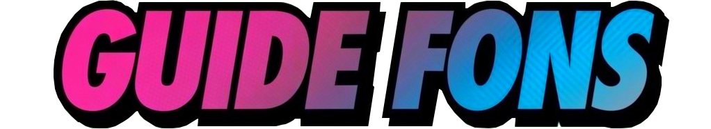

Les fons, c'est quoi ?.
Il s’agit de l’une des monnaies principales du jeu, et sans doute celle que vous utiliserez le plus..
Elle vous servira à acheter :
Fin voilà, vous avez plus ou moins saisis l'idée, vous en avez besoin !
Il existe plusieurs façons d’en obtenir, que je vais détailler ci-dessous. Certaines nécessitent de l’énergie urbaine, d’autres non. Bon guide !
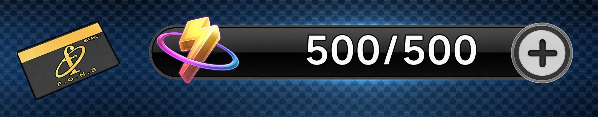
C’est peut-être la manière la plus rapide d’obtenir des Fons : forcer des coffres ! (Vous allez voir, on a quelques tendances kleptomanes dans ce jeu.)
Ils sont au nombre de 5 pour le moment, et on ne sait pas encore s’ils seront réinitialisés plus tard. À l’heure où j’écris ce guide, les coffres ne se referment pas.
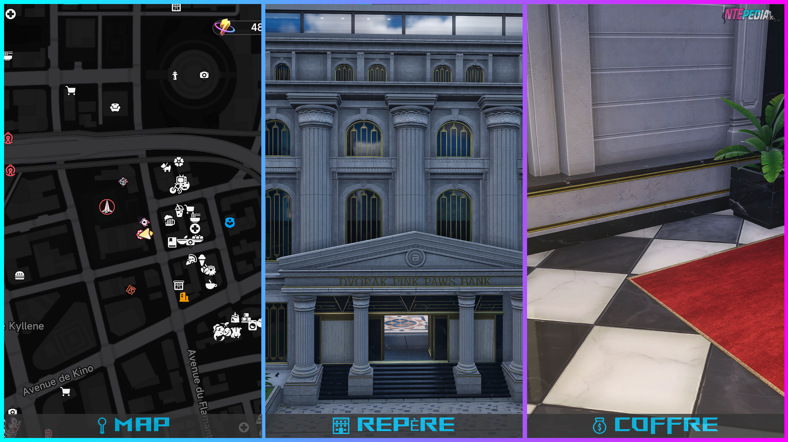
C’est probablement le premier que vous trouverez par hasard au fil de vos quêtes (je détaille cela plus bas).
Il se trouve au siège de la Banque des Papattes Roses dans le quartier de New Herland.
Pour le trouver, entrez dans la banque, montez les escaliers à droite, puis entrez dans le bureau situé à gauche en haut des escaliers.
Récompense :
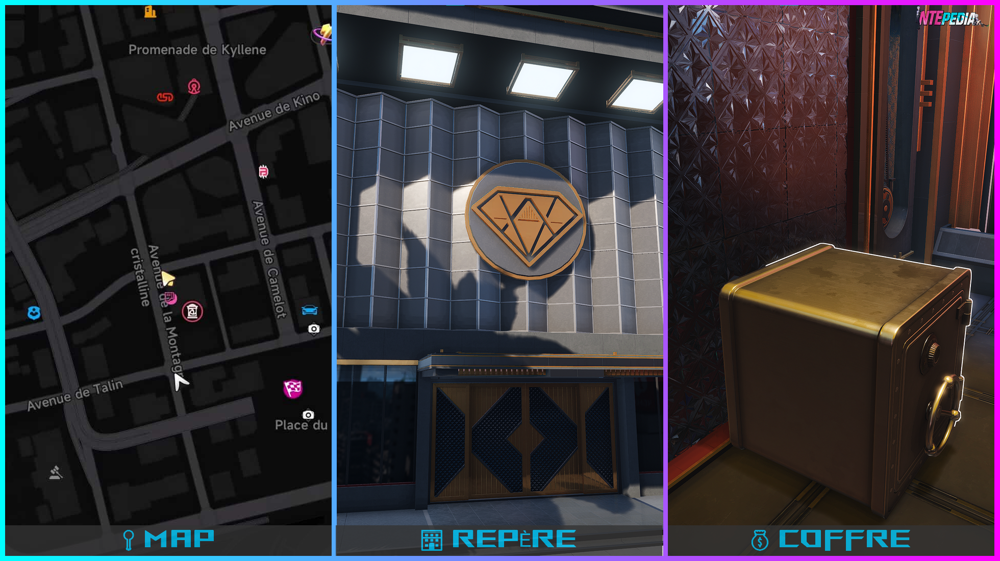
Le second coffre à ouvrir se trouve dans l’atelier d’arcs.
Toujours dans le quartier de New Herland.
Pour le trouver, entrez dans l’atelier, prenez tout de suite les escaliers à gauche, puis encore à gauche une fois en haut.
Récompense :
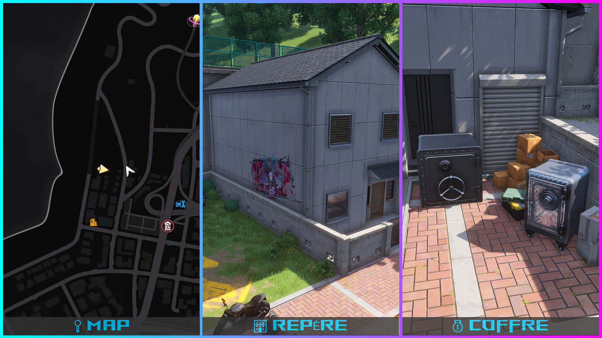
Le troisième coffre à ouvrir est caché dans un coin paumé du quartier de la Ville Chimérique, au fond d’une ruelle.
Attention quand même : il y a souvent de l’activité criminelle juste devant.
Récompense :
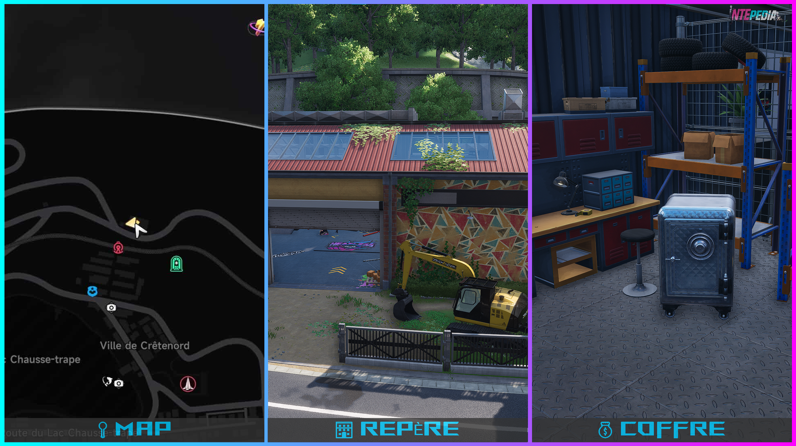
Le quatrième coffre à ouvrir se trouve dans un ancien garage.
Il se trouve dans le quartier de Miguel, près de l’activité « Par-delà les rails ».
Deux coffres sont présents à l’intérieur. Comme pour le troisième, il y a de l’activité criminelle.
Récompense :
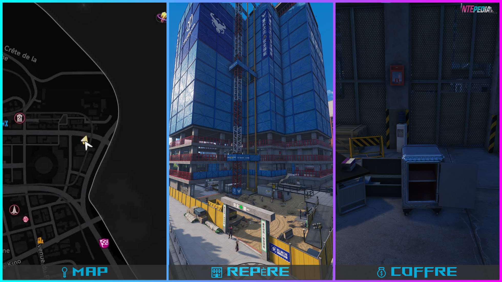
Les derniers coffres à ouvrir sont répartis sur un chantier.
Il se trouve à l’est du quartier de Miguel.
Plusieurs coffres sont cachés ici : fouillez les étages en éliminant les ennemis, car ici aussi, l’activité criminelle est bien présente.
Récompense :
Quand je vous disais qu’on avait des tendances kleptomanes ?
Bon, faut avouer : c’est peut-être la meilleure activité pour faire des Fons. À faire en solo ou en multi, le but est de récupérer un maximum de Fons et de reliques dans un certain laps de temps. Jusqu'à 1 000 000 de Fons possible par semaine.
Je n’en dis pas trop ici, car un guide dédié arrivera bientôt. (Oh le vilain tease.)
Sachez simplement que pour y avoir accès, vous devez être niveau 10 en Magnat et lancer la quête de Chiz.
Pour vous repérer sur la map, les banques des Papattes Roses ont cette icône : 

Pour cette section, je ferai sûrement un guide plus détaillé plus tard.
Plusieurs petites activités sont disponibles et consomment de l'énergie urbaine.
Elles comprennent entre autres :
Chaque activité rapporte plus ou moins de Fons selon le temps que vous y passez, mais pour faire simple (merci Chinyu pour l’info) : 1 énergie urbaine = 1 000 Fons.
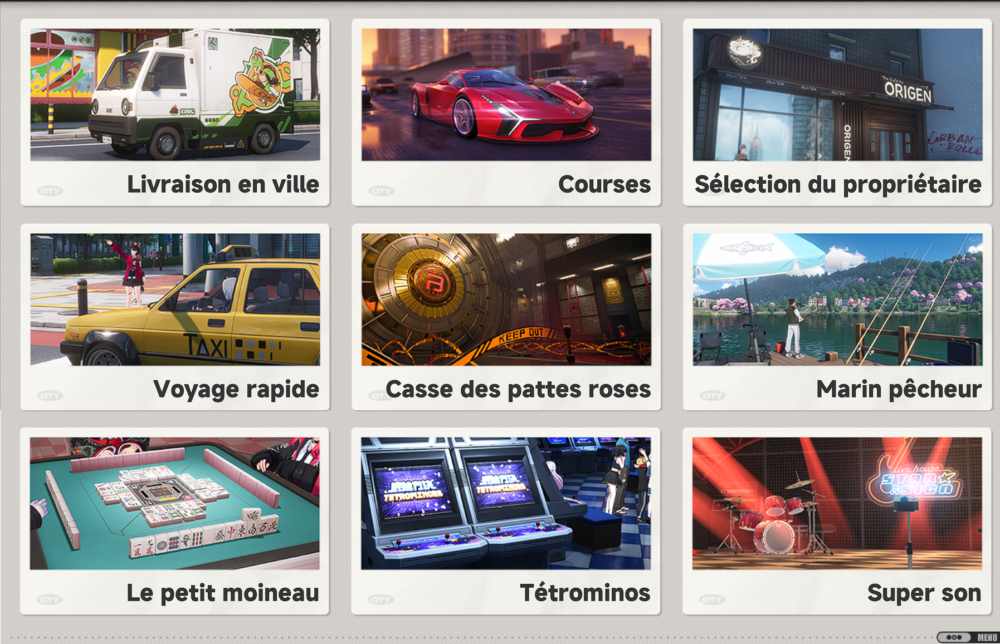
Ahhh, une des activités les plus intéressantes du jeu (c’est mon point de vue hein :o).
Vous aurez la possibilité de gérer un ou plusieurs cafés dans la ville.
En améliorant vos cafés, mais aussi certains Espers, cela vous permettra de générer des Fons tous les jours de manière passive.
Je vous prépare rapidement un guide complet là-dessus, mais sachez que cela peut être très rentable !
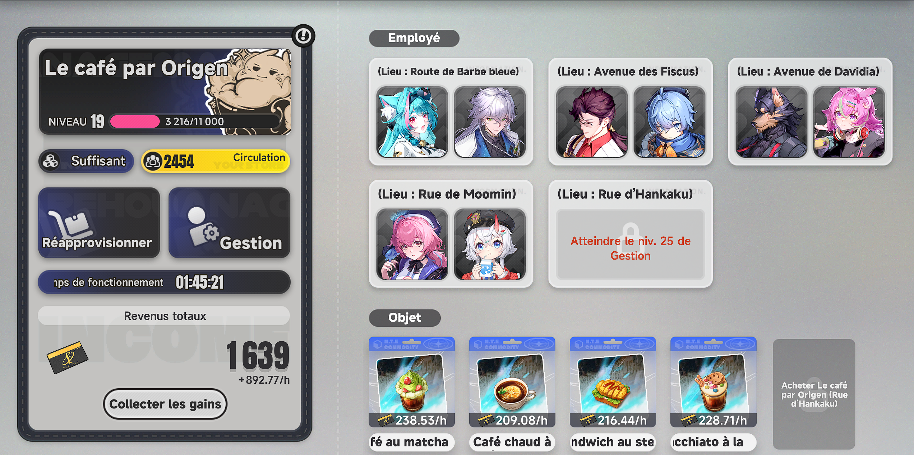
Autre option pour faire des fons, débloquer le Royaume de Cupidité.
Comment le débloquer ? Il vous faut d'abord finir la quête des enchères « Marché conclu ? Marché conclu ! » au chapitre 3.
Une foi la quête finie, vous devriez avoir accès aux enchères dans l'hôtel Grand Kape dans le quartier de Herland. Il faudra y acheter deux type de ressources :
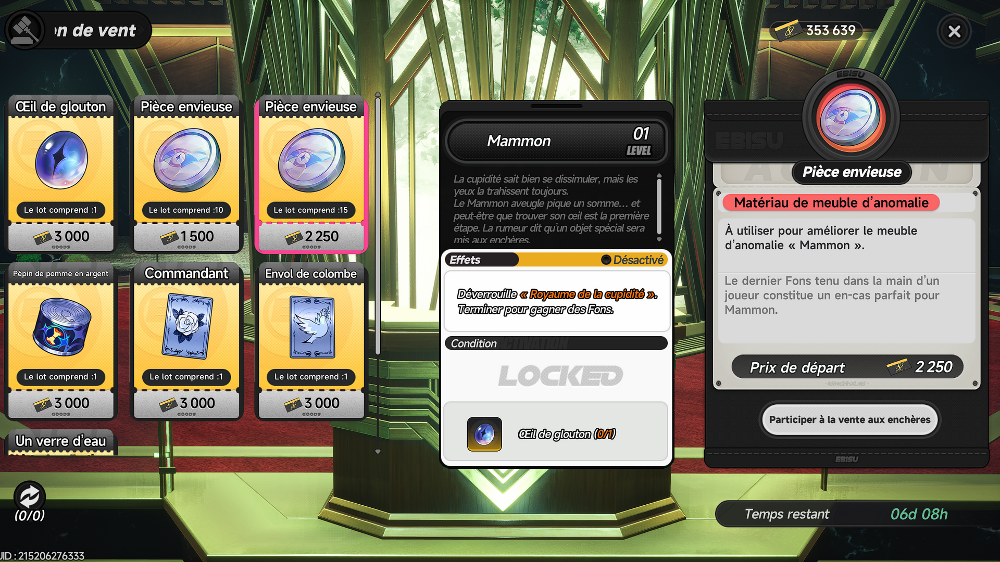
L'oeil de glouton permet de débloquer l'anomalie correspondante dans vos logements et débloquera l'accès au Royaume de cupidité :
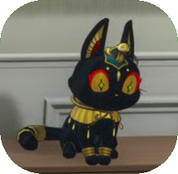
Les pièces envieuse quand à elles, permettent d'augmenté le niveau de l'anomalie.
La récompense du Royaume sera une certaine de quantité de Fons en fonction du niveau de celle-ci.
En vous baladant dans la magnifique ville d’Hethereau, vous tomberez souvent sur des corbeaux. En les approchant, vous récupérerez des « Oracles ».
Ces Oracles sont à donner à la sorcière représentée par ce symbole sur la carte :
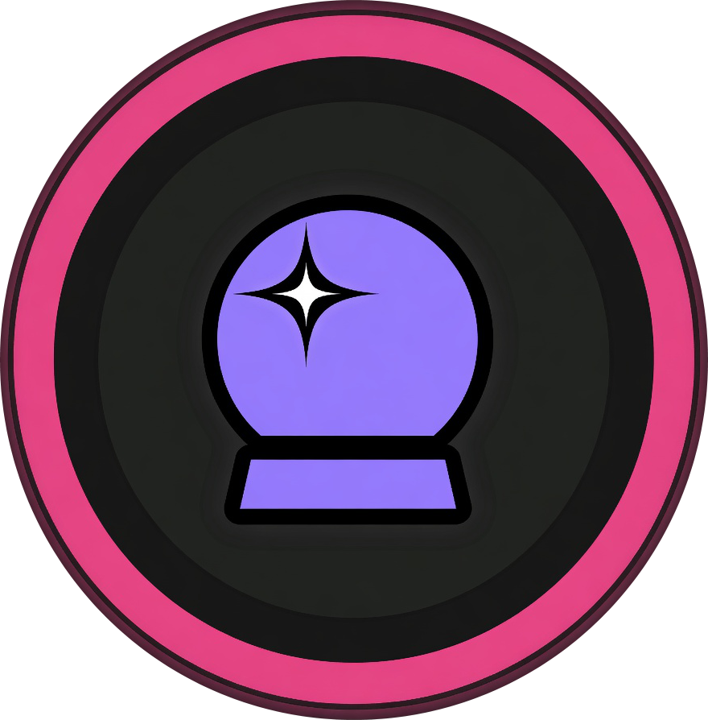
.Selon la quantité d’Oracles donnés et votre niveau de don, vous récupérerez diverses récompenses, dont des Fons.